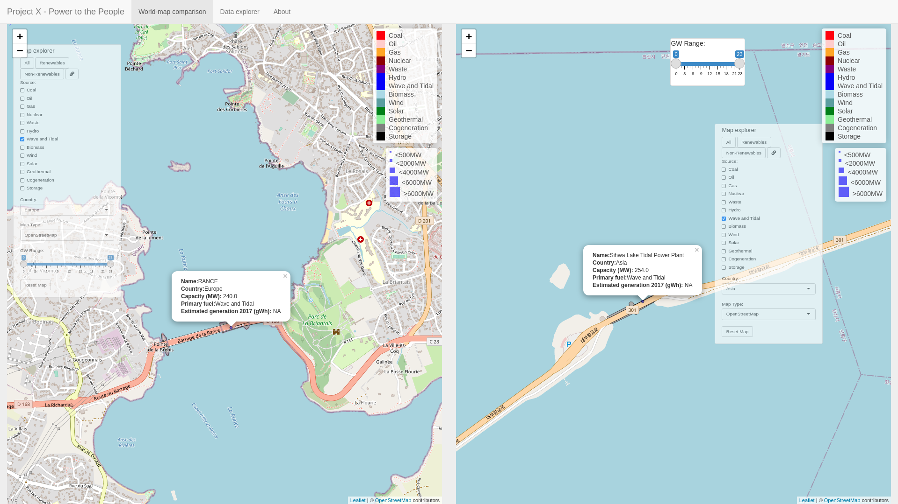
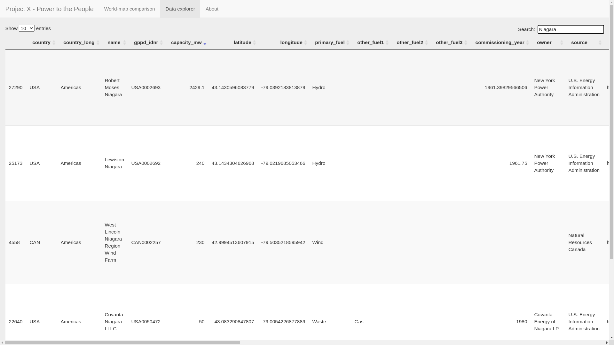

Introduction | Data | Interesting notes on the data
Link to the visualization:
https://parrot.shinyapps.io/projectx/.
Data source: https://datasets.wri.org/dataset/globalpowerplantdatabase
Author: David Shumway
Video review:
.
Project X - Power to the People visualizes power plants across the globe in the year 2017 using R with a web interface built using the Shiny library. Data for the application includes plant location, capacity, primary fuel, and estimated 2017 generation.

Figure 1: Project X - Power to the People: Comparison of two tidal power plants located in France (left) and South Korea (right), respectively.
The application includes two tabs: a world comparison tab, and a data explorer tab containing the data in table format.
The world comparison page includes two world maps and two control panels for controlling data shown on either map. Each control panel includes energy sources of plants to include on the map, buttons to select all renewable and non-renewable plants, respectively, a link sources button for linking left and right menu power sources, a continent selection menu, a background map selection menu, a slider tool for controlling plant size in gigawatts (GW), and a reset map button.
The data explorer tab includes a searchable table of all the data that was used in the visualization.

Figure 2: Data explorer tab.